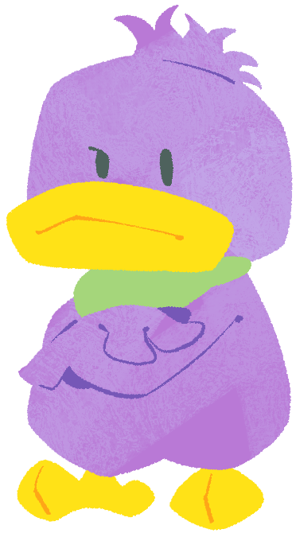

Gizarin (Male)One of Kururin's younger brothers. He takes everything so seriously, sometimes at face-value. He appears to be smart and likes things done professionally and carefully. Fuwarin's lack of focus in this regard annoys him. His hair is spiky. |
 |